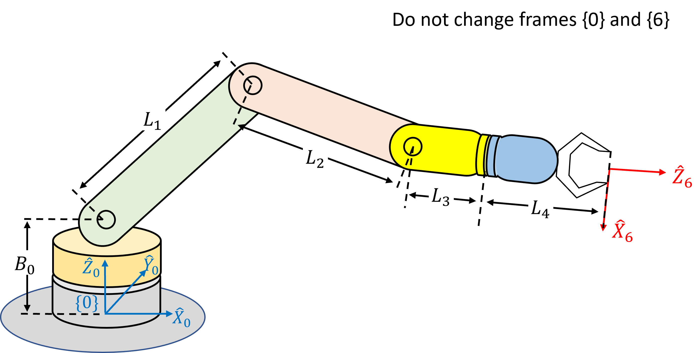

Forward Kinematics
Contents
Forward Kinematics¶
Objectives¶
The purpose of this lab is to compare the theoretical solution to the forward kinematics problem with a physical implementation on the robotic arm shown below.

In this lab, you will
Parameterize the robotic arm following the Denavit-Hartenberg (DH) convention.
Use Python to compute the forward kinematic equations for the robot.
Write a Python script that moves the robot to the configurations specified by the user.
Prelab (Homework 17): Forward kinematics of 5 DoF robotic arm¶
Use the schematic diagram shown below to find the forward kinematics of the robotic manipulator.
{kind=link}
💻 Procedure¶
Python simulation for robotic arm¶
Use Python to create an instance of the robotic arm. Download xArm.py from Teams and complete the constructor of XArm. XArm is a subclass of DHRobot. You need to use your DH table to create a DHRobot object. Since XArm is a subclass of DHRobot, you can use all the methods and properties defined in DHRobot.
def __init__(self, simulation_only=False):
self.B0 = 0.090
self.L0 = 0.010
self.L1 = 0.105
self.L2 = 0.088
self.L3 = 0.174
self.ordered_joints = ('base', 'shoulder', 'elbow', 'wpitch', 'wroll')
super().__init__(
[rbt.RevoluteMDH(d=self.B0),
"""
write your code here
"""
],
name="xArm"
)
Find the forward kinematics and generate plots for the following configurations in xArm.py
def test_forward_kinematics():
robot = XArm(simulation_only=True)
q = list()
q.append([0, pi/2, 0, 0, 0]) # rest position
q.append([0, 0, 0, 0, 0]) # zero position
q.append([0, pi/2, -pi/2, 0, 0])
q.append([0, pi/2, pi/2, 0, 0])
q.append([0, pi/2, 0, -pi/2, 0])
q.append([0, pi/2, 0, pi/2, 0])
q.append([0, pi/2, 0, 0, -pi/2])
q.append([0, pi/2, 0, 0, pi/2])
q.append([-pi/2, pi/2, -pi/2, 0, -pi/2])
q.append([pi/2, pi/2, pi/2, 0, pi/2])
"""
Write your code to find the forward kinematics and generate plots
"""
Deliverable 1: Submit the pose (position and orientation) of the tooltip for each configuration. Do not submit the figures.
Physical Implementation of Forward Kinematics for Robotic Arm¶
Carefully read the following functions inside xArm.py.
def joint_to_servo_angles(self, joint_angles, joint_names=None):
def servo_angles_to_positions(self, servo_angles, joint_names=None):
def get_servo_command(self, duration_ms, servo_positions, joint_names=None):
def send_command(self, command):
def move_joints(self, duration_ms, joint_angles, joint_names=None, wait=True):
def move_to_initial_pose(self, duration_ms, wait=True):
Comment out the first line after __name__ == '__main__':, which is located at the bottom of the code, and
uncomment the second line.
if __name__ == '__main__':
test_forward_kinematics() <-- COMMENT OUT
# test_servo_position_command() <-- UNCOMMENT
# test_servo_angle_command()
# test_move_joints()
Carefully look at the joint angles for the corresponding servo angles. Find the mathematical relationshop between servo angles (\(\alpha_i\)) and joint angles (\(\theta_i\)).
Deliverable 2: For each joint, report the mathematical equation for \(\theta\) in terms of \(\alpha\).
Comment out the first two lines after __name__ == '__main__': and uncomment the third line.
if __name__ == '__main__':
test_forward_kinematics() <-- COMMENT OUT
# test_servo_position_command() <-- COMMENT OUT
# test_servo_angle_command() <-- UNCOMMENT
# test_move_joints()
Read def test_servo_angle_command(): and complete the rest of the function.
Deliverable 3: For each joint, report the mathematical equation for \(\theta\) in terms of \(\alpha\).
Comment out the first three lines after __name__ == '__main__': and uncomment the last line.
if __name__ == '__main__':
test_forward_kinematics() <-- COMMENT OUT
# test_servo_position_command() <-- COMMENT OUT
# test_servo_angle_command() <-- COMMENT OUT
# test_move_joints() <-- UNCOMMENT
Update the following two lines inside the constructor, def __init__(self, simulation_only=False):
# alpha = direction * theta + offset
# where alpha is the servo angle and theta is the joint angle.
self.joint_servo_offset = (0, 0, 0, 0, 0)
self.joint_servo_direction = (1, 1, 1, 1, 1)
Read def test_move_joints(): and complete the rest of the function.
Deliverable 4: Demo your robot moving the joints as described in the function.
Go to def test_forward_kinematics(): and replace True with False in the following line.
robot = XArm(simulation_only=True) <-- change it to False
Uncomment the first line after __name__ == '__main__': and comment out the rest.
Excute the code and use a ruler to measure the position of the tool-tip. Compare the measure vaules with the calcualted vaules.
Deliverable 5 Report the measured values and the calculated values. What is the average error?